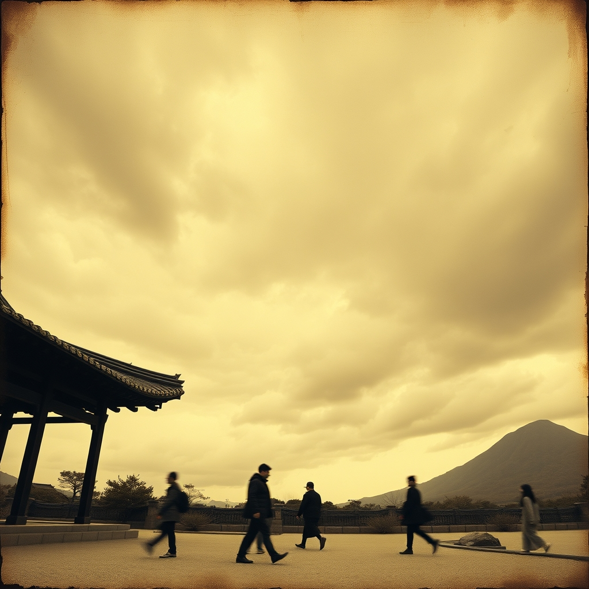
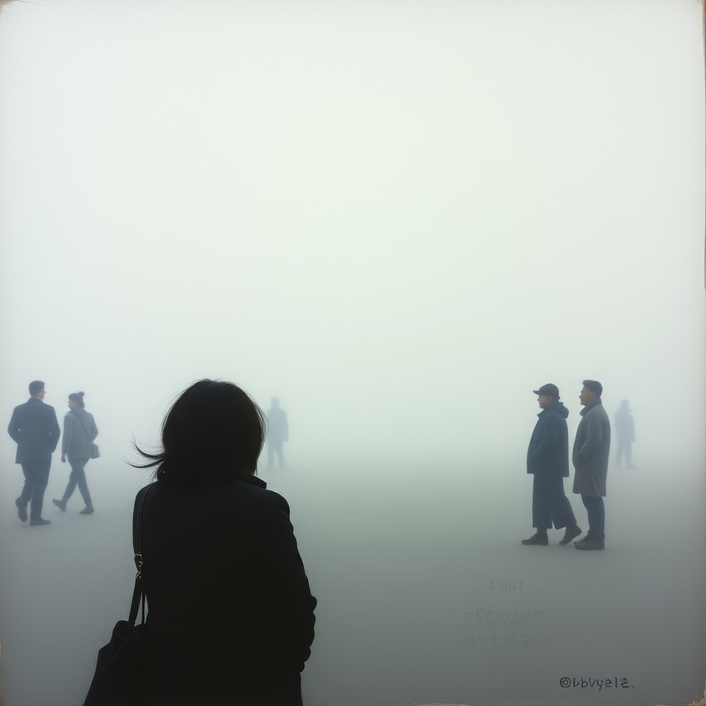

제주시 원도심(옛 도심) 한복판, 지금도 사람들이 오가는 자리에 관덕정(觀德亭)이라는 오래된 목조 건물과 그 앞 광장이 있습니다. 관덕정은 1448년(조선 세종 30년) 안무사(安撫使, 지방을 다스리러 파견된 벼슬로 목사라고도 부름) 신숙청이 병사들을 훈련시킬 목적으로 세운 건물입니다. 건립된 뒤에는 관(관청)과 민(백성)이 함께 모이는 회의 장소, 죄인을 다스리는 곳 등으로도 쓰였습니다. 지금은 보물 제322호(국가가 지정해 보호하는 문화유산)로 지정되어 있고, 제주목 관아(조선시대 제주를 다스리던 관청 건물들)의 일부를 이루고 있습니다. '관덕'이라는 이름은 '활을 쏘는 것은 높고 훌륭한 덕을 쌓는 것이다'라는 예기(禮記, 옛 중국의 예법을 다룬 고전)의 구절에서 따온 것으로, 문무(文武, 학문과 무예)의 올바른 정신을 본받자는 뜻입니다. 그런데 이 평범해 보이는 광장은 제주 4·3을 이야기할 때 거의 언제나 가장 먼저 등장합니다. 왜일까요?
In the middle of Jeju City's old downtown, where people still pass by today, stands an old wooden building called Gwandeokjeong and the square in front of it. Gwandeokjeong was built in 1448 (the 30th year of King Sejong's reign in the Joseon dynasty) by Sin Suk-cheong, an anmusa (a court-appointed provincial official, also called a moksa), for the purpose of training soldiers. After it was built, it also came to be used as a place where officials and residents met together, as a place where offenders were dealt with, and for other purposes. Today it is designated Treasure No. 322 (a heritage item designated and protected by the state) and forms part of the Jeju Mok government office complex (the cluster of buildings from which Jeju was governed during the Joseon dynasty). The name Gwandeok comes from a line in the Yegi (the Book of Rites, an old Chinese classic on ritual and propriety) — 'to shoot an arrow is to build lofty and admirable virtue' — and expresses the wish to follow the true spirit of both learning and martial skill. And yet this ordinary-looking square is almost always the first place mentioned when people talk about Jeju 4·3. Why is that? [Source: On-site information sign — Gwandeokjeong Pavilion sign (Treasure designation description)]
관덕정은 아주 오래전인 1448년에 지어진 건물이에요. 그런데 1947년 3월 1일, 이 광장 앞에서 일어난 일이 제주 4·3이 시작되는 첫 불씨가 되었답니다.
Gwandeokjeong is a building built way back in 1448. But what happened in front of this square on March 1, 1947 became the very first spark of Jeju 4·3.
📚 낱말풀이
- 3·1절
- 1919년 일본으로부터 독립을 외쳤던 날을 기념하는 날이에요.
- 도립병원
- 제주도가 운영하던 병원이에요.
- 총파업
- 사람들이 다 함께 일을 멈추고 항의하는 것을 말해요.
- 진상 규명
- 무슨 일이 있었는지 정확하게 밝히는 것을 뜻해요.
📚 Word Bank
- March 1st Movement
- A day marking Korea's 1919 declaration of independence from Japan.
- Provincial hospital
- A hospital that was run by Jeju Province.
- General strike
- When many people stop working together to protest.
- Truth-finding
- Finding out exactly what really happened.
1947년 3월 1일, 관덕정에서 멀지 않은 북국민학교(당시의 초등학교)에서 3·1절 제28주년 기념대회가 열렸습니다. 3만여 명이 참가한 큰 행사였습니다. 행사가 끝나고 참가자들은 동쪽과 서쪽으로 나뉘어 거리 시위를 벌였습니다. 서쪽 행렬이 관덕정 앞을 지날 즈음, 어린아이 한 명이 기마경찰(말을 타고 근무하는 경찰)의 말발굽에 치였습니다. 그런데 경찰은 아무런 조치 없이 그대로 지나갔습니다. 그 아이가 그 뒤 어떻게 되었는지는 남아 있는 기록에 없습니다. 기록이 거기서 멈추기 때문에, 이 이야기에서도 짐작으로 그 빈칸을 메우지 않습니다. 이 광경을 본 군중이 격분해 항의했고, 그 과정에서 응원경찰(다른 지역에서 지원 나온 경찰 병력)이 총을 쏘았습니다. 이 발포로 관덕정과 도립병원 앞에서 주민 6명이 숨지고 8명이 크고 작은 부상을 입었습니다. 이 일을 '3·1사건'이라고 부릅니다. 여기서 한 가지 주의할 점이 있습니다. 숨진 6명이 모두 관덕정 앞에서 목숨을 잃은 것은 아닙니다. 도립병원 옛터에 대한 기록에 따르면, 관덕정 앞에서 총에 맞은 사람들 가운데 4명은 그 자리에서 숨졌고 2명은 병원으로 옮겨진 뒤 숨졌습니다. 같은 날, 부상자들이 실려 간 제주도립병원에서는 2차 발포가 있었습니다. 병원을 경호하던 이문규 순경이 공포감에 총을 쏘아 지나가던 행인 2명이 중상을 입었습니다. 이 행인 2명은 앞의 '사망 6명·중경상 8명'과는 별개로 남아 있는 기록이므로, 두 수치를 합치거나 하나의 사건으로 뭉뚱그려 이해해서는 안 됩니다. 그로부터 9일 뒤인 3월 10일, 사건의 진상규명(무슨 일이 왜 일어났는지 밝히는 것)과 책임자 처벌을 요구하며 사상 초유의 3·10 민관총파업이 일어났습니다. 관공서에서 일하던 사람들과 민간인이 함께 일손을 놓고 항의한 파업이었습니다. 이 총파업이 제주 4·3이 터지는 도화선이 되었습니다. 3월 1일 오후의 한 장면이 어떻게 역사의 방아쇠가 되었는지, 그 연쇄가 이 광장에서 시작됐습니다.
On March 1, 1947, a rally marking the 28th anniversary of the March 1st Independence Movement was held at Buk Elementary School, not far from Gwandeokjeong. It was a large gathering, attended by roughly 30,000 people. When the rally ended, participants split into eastern and western columns and marched through the streets. As the western column was passing in front of Gwandeokjeong, a young child was struck by the hooves of a mounted policeman's horse, and the police rode on without doing anything about it. What became of that child afterward does not appear in the surviving records. Because the record stops there, this story does not fill that blank with guesswork either. The crowd who saw this grew furious and protested, and in the course of it the reinforcement police (police units sent in from other regions) opened fire. The shooting killed 6 residents and left 8 with injuries ranging from serious to minor, in front of Gwandeokjeong and the provincial hospital. This is known as the 'March 1st Incident.' One point deserves care here: not all 6 of the dead died in front of Gwandeokjeong. According to the record on the former provincial hospital site, of those shot in front of Gwandeokjeong, 4 died on the spot and 2 died after being taken to the hospital. That same day, a second shooting took place at the Jeju Provincial Hospital where the wounded had been carried. Patrolman Lee Mun-gyu, who was guarding the hospital, fired his weapon out of fear and seriously wounded 2 passers-by. These 2 passers-by appear in the record separately from the '6 dead and 8 seriously or lightly injured' above, so the two sets of figures must not be added together or lumped into a single event. Nine days later, on March 10, an unprecedented general strike by both public officials and civilians broke out, demanding a full investigation into what had happened and why, and punishment for those responsible. People working in government offices and ordinary civilians alike put down their work in protest. That general strike became the spark that set off Jeju 4·3. How a single afternoon on March 1 came to pull the trigger on history — that chain of events began in this square.
그런데 정작 그 현장에는 이 일을 알려 주는 안내판이 없습니다. 2020년 9월 29일 현장조사 당시 관덕정에 서 있던 안내판은 조선시대 건축물로서의 관덕정만 설명할 뿐, 그 앞마당에서 있었던 1947년의 일에 대해서는 한 줄도 적혀 있지 않았습니다. 조사보고서 총론도 바로 이 점을 지적합니다. 4·3의 도화선이 된 자리에 4·3이 적혀 있지 않다는 것입니다. 그 이후에 달라진 점이 있는지는 이 자료에 기록돼 있지 않습니다. 관덕정에서 걸어 닿는 거리에는 이 이야기와 이어지는 두 곳이 더 있습니다. 부상자들이 실려 가 2차 발포가 일어난 제주도립병원 옛터(제주시 삼도이동 154)는 지금 그 흔적이 남아 있지 않습니다. 1989년 시민사회단체들이 반세기 동안 이어진 금기를 깨고 제1회 4·3추모제를 연 제주시민회관(제주시 이도이동)도 마찬가지로 그 일을 알려 주는 표시가 없습니다. 두 곳 모두 지금 가서 볼 수 있는 유적이라기보다, '무슨 일이 있었던 자리'로 좌표만 남아 있는 옛터입니다. 건물 자체도 시간을 겪었습니다. 1924년 일제강점기에 일본인이 수리하면서 지붕처마가 2척(척은 옛날에 쓰던 길이 단위) 정도 잘려 변형되었다가, 2006년 보수를 통해 원래 모습을 되찾았습니다. 조선의 훈련장이자 회의 장소였고, 1947년의 광장이었고, 오늘은 보물로 지정된 문화유산인 자리. 그 겹겹의 시간 가운데 가장 설명이 적은 시간이 바로 1947년입니다. 이 페이지는 안내판이 아직 말하지 않은 그 빈자리를 대신 채웁니다.
And yet at the site itself there is no information sign telling visitors about this. At the time of the field survey on September 29, 2020, the sign standing at Gwandeokjeong explained only the pavilion as a Joseon-era structure, and not a single line described what happened in its forecourt in 1947. The survey report's overview points to exactly this: at the place where the spark of 4·3 was struck, 4·3 is not written down. Whether anything has changed since then is not recorded in this material. Within walking distance of Gwandeokjeong are two more places tied to this story. The former site of Jeju Provincial Hospital (154 Samdo 2-dong, Jeju City), where the wounded were carried and the second shooting occurred, retains no trace of it today. Jeju Citizens' Hall (Ido 2-dong, Jeju City), where civic groups broke half a century of silence to hold the first Jeju 4·3 memorial ceremony in 1989, likewise carries no marker recording that event. Neither is a standing site you can go and see; each survives as a former site, a set of coordinates for something that once happened there. The building too has passed through time. In 1924, under Japanese colonial rule, a Japanese repair effort shortened and altered the roof eaves by about two cheok (cheok being an old unit of length), and a 2006 restoration returned the pavilion to its original form. A Joseon training ground and meeting place; the square of 1947; today a nationally designated Treasure. Of all these layered stretches of time, the one with the least explanation on site is 1947. This page fills in that blank the sign has not yet spoken. [Source: On-site information sign — Gwandeokjeong Pavilion sign (Treasure designation description)]


낭독: AI TTS (관리자가 직접 지정한 오디오 파일) · 배경음악: 자체 생성 BGM (관리자가 직접 지정한 오디오 파일)(낭독 대비 음량 25%) Narration: AI TTS (audio file manually provided by an administrator) · BGM: self-generated BGM (audio file manually provided by an administrator) (25% volume relative to narration)
🌼 이야기 확인 퀴즈🌼 Story Check Quiz
Q1. 관덕정은 언제, 무엇을 위해 지어졌을까요?Q1. When and for what purpose was Gwandeokjeong built?
정답은 A! 1448년(조선 세종 30년)에 안무사 신숙청이 병사들을 훈련시킬 목적으로 세웠어요. 회의 장소나 죄인을 다스리는 곳으로 쓰인 건 건립된 뒤의 일이에요.The answer is A! It was built in 1448 (the 30th year of King Sejong's reign) by the anmusa Sin Suk-cheong for the purpose of training soldiers. Its use as a meeting place or a place where offenders were dealt with came after it was built.
Q2. 1947년 3월 1일, 시위 행렬이 관덕정 앞을 지날 때 무엇이 발단이 되었나요?Q2. On March 1, 1947, what set things off as the march passed in front of Gwandeokjeong?
정답은 B! 이 광경을 본 군중이 격분해 항의했고, 그 과정에서 응원경찰의 발포로 이어졌어요. 다만 그 아이가 그 뒤 어떻게 되었는지는 남아 있는 기록에 없어요.The answer is B! The crowd who saw it grew furious and protested, and in the course of that the reinforcement police opened fire. What became of that child afterward, however, does not appear in the surviving records.
Q3. 3·1사건으로 숨진 주민 6명은 어디에서 목숨을 잃었나요?Q3. Where did the 6 residents killed in the March 1st Incident die?
정답은 B! 기록은 '관덕정과 도립병원 앞'이라고 적고 있어요. 한 곳으로 뭉뚱그리지 않고 두 장소를 나란히 적는 것이 정확한 표현이에요.The answer is B! The record says 'in front of Gwandeokjeong and the provincial hospital.' Naming both places rather than collapsing them into one is the accurate way to put it.
Q4. 3·1사건 뒤인 1947년 3월 10일에는 어떤 일이 있었나요?Q4. What happened on March 10, 1947, after the March 1st Incident?
정답은 A! 진상규명과 책임자 처벌을 요구한 3·10 민관총파업이 제주 4·3이 터지는 도화선이 되었어요. 지붕처마 변형은 1924년, 제1회 4·3추모제는 1989년 제주시민회관에서 있었던 일이에요.The answer is A! The March 10 general strike, demanding a full investigation and punishment of those responsible, became the spark that set off Jeju 4·3. The alteration of the eaves happened in 1924, and the first Jeju 4·3 memorial ceremony was held in 1989 at Jeju Citizens' Hall.
Q5. 안내판 조사보고서의 현장조사(2020년 9월 29일) 당시, 관덕정에 서 있던 안내판은 무엇을 설명하고 있었나요?Q5. At the time of the field survey for the sign report (September 29, 2020), what did the sign standing at Gwandeokjeong explain?
정답은 B! 조사보고서 총론도 4·3의 도화선이 된 자리에 4·3이 적혀 있지 않다고 지적했어요. 그래서 이 페이지가 안내판이 아직 말하지 않은 그 빈자리를 대신 채웁니다.The answer is B! The report's overview also points out that at the place where the spark of 4·3 was struck, 4·3 is not written down. That is why this page fills in the blank the sign has not yet spoken.